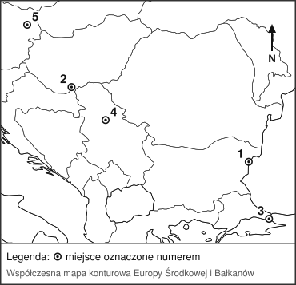
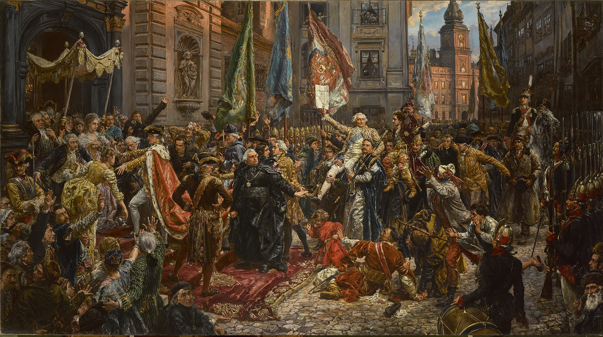

KOD UCZNIA:
Materiał autorski do ćwiczeń, opracowany na podstawie regulaminu szczegółowego oraz archiwalnych arkuszy etapu szkolnego Kujawsko-Pomorskiego Kuratora Oświaty z lat 2018/2019–2025/2026. Nie jest oficjalnym arkuszem konkursowym.
Wpisz pojęcie lub nazwę pasującą do opisu.
| 1. Pismo Mezopotamii, odciskane rylcem na glinianych tabliczkach. | |
| 2. Najstarszy znany zbiór praw, spisany na kamiennej steli przez władcę Babilonu. | |
| 3. Schodkowa świątynia w kształcie wieży, wznoszona w miastach Mezopotamii. | |
| 4. Lud, który założył w Mezopotamii pierwsze miasta-państwa, m.in. Ur i Uruk. | |
| 5. Nazwy dwóch rzek, między którymi leżała Mezopotamia. |
Dopasuj pojęcie lub nazwę do opisu. Wpisz litery A–F. Jedna odpowiedź jest zbędna.
| 1. Lud żeglarzy i kupców ze wschodniego wybrzeża Morza Śródziemnego, zakładający kolonie na całym jego obszarze. | |
| 2. Pismo złożone ze znaków oznaczających głoski; od niego wywodzą się pisma europejskie. | |
| 3. Wyspa, na której rozwinęła się najstarsza cywilizacja Europy. | |
| 4. Pałac w Knossos o tak zawiłym układzie pomieszczeń, że dał początek mitowi o Minotaurze. | |
| 5. Bardzo drogi barwnik, wytwarzany z morskich ślimaków, zastrzeżony dla dostojników. |
Oceń prawdziwość zdań. Wpisz P (prawda) albo F (fałsz).
| 1. Konfucjusz był władcą, który zjednoczył Chiny. | |
| 2. Chińczycy wynaleźli papier, jedwab, proch i kompas. | |
| 3. Buddyzm powstał w Chinach i dopiero potem dotarł do Indii. | |
| 4. Wielki Mur Chiński miał chronić państwo przed najazdami ludów z północy. | |
| 5. W starożytnych Indiach społeczeństwo dzieliło się na zamknięte grupy zwane kastami. |
Dopasuj pojęcie lub postać do opisu. Wpisz litery A–F. Jedna odpowiedź jest zbędna.
| 1. Miasto w Afryce Północnej, główny rywal Rzymu w walce o panowanie nad Morzem Śródziemnym. | |
| 2. Wódz, który przeprowadził armię przez Alpy i wkroczył do Italii. | |
| 3. Bitwa z 216 r. p.n.e., w której Rzymianie ponieśli największą klęskę. | |
| 4. Rzymski dowódca, który w 202 r. p.n.e. zwyciężył pod Zamą. | |
| 5. Zwierzęta użyte w walce przez wojska kartagińskie, budzące przerażenie Rzymian. |
Uzupełnij tekst, wpisując w luki litery A–F. Jedna odpowiedź jest zbędna.
Pierwszym historycznym władcą Polski był (1), panujący z dynastii (2). W 965 r. poślubił czeską księżniczkę (3), a rok później przyjął chrzest. Dzięki temu Polska weszła do kręgu kultury (4). W 972 r. władca ten pokonał wojska margrabiego Hodona w bitwie pod (5).
Rozwiąż krzyżówkę, a następnie wyjaśnij znaczenie hasła z zaznaczonej kolumny.
| 1. Zbiór przepisów określających życie wspólnoty zakonnej. |
| 2. Zakon, który zakładał klasztory na nieuprawnych terenach i słynął z gospodarności. |
| 3. Zakon żebraczy założony przez świętego Franciszka z Asyżu. |
| 4. Młodzieniec służący rycerzowi i przygotowujący się do pasowania. |
| 5. Znak rozpoznawczy rodu rycerskiego, umieszczany na tarczy. |
| 6. Budynek, w którym mieszka wspólnota zakonna. |
| 1. | |||||||||||||
| 2. | |||||||||||||
| 3. | |||||||||||||
| 4. | |||||||||||||
| 5. | |||||||||||||
| 6. |
Hasło:
Wyjaśnij, kogo określano tym słowem. (1 p.)
Oceń prawdziwość zdań. Wpisz P (prawda) albo F (fałsz).
| 1. Zakon krzyżacki powstał w czasie wypraw krzyżowych w Palestynie. | |
| 2. Krzyżacy zwrócili Polsce ziemię chełmińską zaraz po podbiciu Prusów. | |
| 3. Krzyżaków sprowadził do Polski w 1226 r. książę Konrad Mazowiecki, licząc na pomoc w walce z Prusami. | |
| 4. Zakon krzyżacki od początku podlegał władzy królów Polski. | |
| 5. Główną siedzibą wielkiego mistrza zakonu został zamek w Malborku. |
Dopasuj wynalazek do opisu. Wpisz litery A–F. Jedna odpowiedź jest zbędna.
| 1. Urządzenie wykorzystujące siłę nurtu rzeki do napędzania kamieni mielących zboże. | |
| 2. Sposób uprawy, w którym pole dzielono na trzy części, a jedną pozostawiano nieobsianą. | |
| 3. Wynalazek Jana Gutenberga, który umożliwił szybkie powielanie książek. | |
| 4. Mieszanina, która dotarła do Europy z Chin i zmieniła sposób prowadzenia wojen. | |
| 5. Osłona ciała rycerza wykonana z dopasowanych metalowych blach. |
Dopasuj postać lub instytucję do opisu. Wpisz litery A–F. Jedna odpowiedź jest zbędna.
| 1. Autor najstarszej kroniki dziejów Polski, napisanej po łacinie na początku XII w. | |
| 2. Biskup krakowski, autor kolejnej kroniki, pełnej legend o początkach Polski. | |
| 3. Uczelnia założona w 1364 r. przez Kazimierza Wielkiego, odnowiona w 1400 r. | |
| 4. Rzeźbiarz, twórca ołtarza w kościele Mariackim w Krakowie. | |
| 5. Kronikarz z XV w., autor „Roczników, czyli kronik słynnego Królestwa Polskiego”. |
Oceń prawdziwość zdań. Wpisz P (prawda) albo F (fałsz).
| 1. Rekonkwistą nazywano walkę chrześcijańskich władców o odzyskanie Półwyspu Iberyjskiego z rąk muzułmanów. | |
| 2. Rekonkwista zakończyła się w 1492 r. zdobyciem Kordoby. | |
| 3. Połączenie Kastylii i Aragonii nastąpiło dzięki małżeństwu Izabeli i Ferdynanda. | |
| 4. Zakończenie rekonkwisty przypadło na ten sam rok, w którym Kolumb dotarł do Ameryki. |
Uporządkuj wydarzenia chronologicznie. Wpisz cyfry od 1 (najwcześniejsze) do 6 (najpóźniejsze).
| A. Zwycięstwo flotylli kaperskiej w Zatoce Świeżej. | |
| B. Powstanie Związku Pruskiego, zwróconego przeciw zakonowi krzyżackiemu. | |
| C. Zawarcie drugiego pokoju toruńskiego. | |
| D. Klęska wojsk polskich w bitwie pod Chojnicami. | |
| E. Objęcie tronu polskiego przez Kazimierza Jagiellończyka. | |
| F. Wybuch wojny trzynastoletniej i poddanie się stanów pruskich królowi Polski. |
„Ponieważ prawa ogólne i ustawy publiczne dotyczą nie pojedynczego człowieka, ale ogółu narodu, przeto na tym walnym sejmie radomskim wraz ze wszystkimi królestwa naszego prałatami, radami i posłami ziemskimi za słuszne i sprawiedliwe uznaliśmy, jakoż postanowiliśmy, iż odtąd na potomne czasy nic nowego (nihil novi) stanowionym być nie ma przez nas i naszych następców, bez wspólnego zezwolenia senatorów i posłów ziemskich, co by było z ujmą i ku uciążeniu Rzeczypospolitej oraz ze szkodą i krzywdą czyjąśkolwiek, tudzież zmierzało ku zmianie prawa ogólnego i wolności publicznej”.
Konstytucja Nihil novi, uchwalona na sejmie walnym w Radomiu w 1505 r. Cyt. za: S. Godek, M. Wilczek-Karczewska, Historia ustroju i prawa w Polsce do 1772/1795. Wybór źródeł, Warszawa 2006, s. 65. Objaśnienia: prałaci – wysocy duchowni, rady – senatorowie, posłowie ziemscy – przedstawiciele szlachty wybrani w ziemiach, z ujmą – ze szkodą.
1. Podaj imię oraz nazwę dynastii króla, w czasie panowania którego uchwalono ten dokument. (1 p.)
2. Wypisz z tekstu nazwy dwóch grup, bez których zgody król nie mógł już ustanawiać nowych praw. (1 p.)
3. Podaj nazwę zgromadzenia, które od tej pory decydowało wspólnie z królem o prawach w państwie. (1 p.)
4. Wyjaśnij, jak ten dokument zmienił pozycję szlachty w państwie. (1 p.)
5. Podaj nazwę ustroju Rzeczypospolitej, którego początek wiąże się z tą konstytucją. (1 p.)
6. Wyjaśnij, jaki był odległy, niekorzystny dla państwa skutek tak szerokich uprawnień szlachty. (1 p.)
Wpisz pojęcie pasujące do opisu.
| 1. Dokument królewski nadający osadzie prawa miejskie. | |
| 2. Zgromadzenie rządzące miastem, na którego czele stał burmistrz. | |
| 3. Najbogatsza grupa mieszczan, z której wybierano władze miasta. | |
| 4. Najbiedniejsza warstwa mieszkańców miasta, pozbawiona praw miejskich. | |
| 5. Budynek będący siedzibą władz miejskich, stawiany zwykle przy rynku. |
Na współczesnej mapie konturowej oznaczono pięć miejsc związanych z ekspansją Turcji osmańskiej. Do każdego opisu dopisz właściwy numer 1–5.

Mapa bazowa: SimpleMapLab na podstawie danych Natural Earth 1:50 mln, domena publiczna (CC0); oznaczenia i opracowanie zadania: własne.
| A. Miasto zdobyte przez Turków w 1453 r., co oznaczało koniec cesarstwa bizantyjskiego. | |
| B. Stolica państwa Habsburgów, oblegana przez Turków w 1529 i 1683 r. | |
| C. Miejsce bitwy z 1444 r., w której poległ król Polski i Węgier Władysław III. | |
| D. Twierdza nad Dunajem, zdobyta przez Turków w 1521 r. | |
| E. Miejsce bitwy z 1526 r., po której Turcy opanowali większą część Węgier. |
F. Podaj rok odsieczy wiedeńskiej.
Oceń, czy podane zjawisko było przyczyną (P), czy skutkiem (S) powstania Bohdana Chmielnickiego.
| 1. Odmowa zwiększenia liczby Kozaków rejestrowych oraz ucisk ludności ukraińskiej przez właścicieli wielkich majątków. | |
| 2. Wyniszczenie ziem ukraińskich i osłabienie Rzeczypospolitej przed najazdem szwedzkim. | |
| 3. Klęski wojsk polskich pod Żółtymi Wodami i Korsuniem, poniesione w walce z Kozakami wspieranymi przez Tatarów. | |
| 4. Sprzeciw prawosławnych Kozaków wobec ograniczania praw ich wyznania. | |
| 5. Zawarcie ugody perejasławskiej i uzależnienie Ukrainy od Rosji. |
Oceń prawdziwość zdań. Wpisz P (prawda) albo F (fałsz).
| 1. Piotr I wprowadzał w Rosji wzorowane na Europie Zachodniej zwyczaje, stroje i urzędy. | |
| 2. Piotr I przyjął dla siebie tytuł imperatora, czyli cesarza. | |
| 3. W wielkiej wojnie północnej Szwecja pobiła Rosję w bitwie pod Połtawą. | |
| 4. Nową stolicą państwa Piotr I uczynił zbudowany na podmokłym terenie Petersburg. | |
| 5. Piotr I zrezygnował z walki o dostęp do Morza Bałtyckiego. |
Dopasuj postać lub pojęcie do opisu. Wpisz litery A–F. Jedna odpowiedź jest zbędna.
| 1. Myśliciel, który głosił potrzebę podziału władzy na ustawodawczą, wykonawczą i sądowniczą. | |
| 2. Filozof znany z krytyki Kościoła oraz obrony tolerancji i wolności słowa. | |
| 3. Autor poglądu, że władza pochodzi z umowy społecznej zawartej przez lud. | |
| 4. Redaktor Wielkiej Encyklopedii Francuskiej. | |
| 5. Nazwa epoki, w której rozum uznano za główne narzędzie poznania świata. |
Przyjrzyj się obrazowi i odpowiedz na pytania.

Jan Matejko, Konstytucja 3 maja 1791, 1891 r., olej na płótnie, 247 × 446 cm, Zamek Królewski w Warszawie. Domena publiczna, Wikimedia Commons.
1. Podaj dzień, miesiąc i rok wydarzenia przedstawionego na obrazie. (1 p.)
2. Podaj nazwę sejmu, który uchwalił ten dokument, oraz lata jego obrad. (1 p.)
3. Podaj imię i nazwisko króla panującego w chwili uchwalenia konstytucji. (1 p.)
4. Wymień dwie zmiany ustrojowe wprowadzone przez tę konstytucję. (1 p.)
5. Podaj nazwę organu władzy wykonawczej, który konstytucja powoływała u boku króla. (1 p.)
6. Wyjaśnij, dlaczego obraz namalowany w 1891 r. nie jest wiarygodnym źródłem wiedzy o wyglądzie tej uroczystości. (1 p.)
Dopasuj nazwę do opisu. Wpisz litery A–F. Jedna odpowiedź jest zbędna.
| 1. Zawiązana w 1792 r. przeciw Konstytucji 3 maja; wezwała do Polski wojska rosyjskie. | |
| 2. Przywódca powstania z 1794 r., który złożył przysięgę na rynku w Krakowie. | |
| 3. Bitwa z 1794 r., w której o zwycięstwie zadecydował atak chłopów uzbrojonych w kosy. | |
| 4. Bitwa z 1794 r., po której przywódca powstania trafił do rosyjskiej niewoli. | |
| 5. Zgromadzenie, które w 1793 r. pod naciskiem Rosji zatwierdziło drugi rozbiór. |
Jeżeli test jest przeprowadzany w warunkach konkursowych, odpowiedzi można przenieść na tę kartę.
| Zadanie | Odpowiedzi |
|---|---|
| I | 1.____________ 2.____________ 3.____________ 4.____________ 5.____________ |
| II | 1.__ 2.__ 3.__ 4.__ 5.__ |
| III | 1.__ 2.__ 3.__ 4.__ 5.__ |
| IV | 1.__ 2.__ 3.__ 4.__ 5.__ |
| V | 1.__ 2.__ 3.__ 4.__ 5.__ |
| VI | 1._______ 2._______ 3._______ 4._______ 5._______ 6._______ hasło: _______ (wyjaśnienie hasła zapisz w arkuszu) |
| VII | 1.__ 2.__ 3.__ 4.__ 5.__ |
| VIII | 1.__ 2.__ 3.__ 4.__ 5.__ |
| IX | 1.__ 2.__ 3.__ 4.__ 5.__ |
| X | 1.__ 2.__ 3.__ 4.__ |
| XI | A.__ B.__ C.__ D.__ E.__ F.__ |
| XII | 1.____________ 3.____________ 5.____________ (odpowiedzi na pytania 2., 4. i 6. zapisz w arkuszu) |
| XIII | 1.____________ 2.____________ 3.____________ 4.____________ 5.____________ |
| XIV | A.__ B.__ C.__ D.__ E.__ F.____________ |
| XV | 1.__ 2.__ 3.__ 4.__ 5.__ |
| XVI | 1.__ 2.__ 3.__ 4.__ 5.__ |
| XVII | 1.__ 2.__ 3.__ 4.__ 5.__ |
| XVIII | 1.____________ 2.____________ 3.____________ 5.____________ (odpowiedzi na pytania 4. i 6. zapisz w arkuszu) |
| XIX | 1.__ 2.__ 3.__ 4.__ 5.__ |
Wynik: / 100 p.